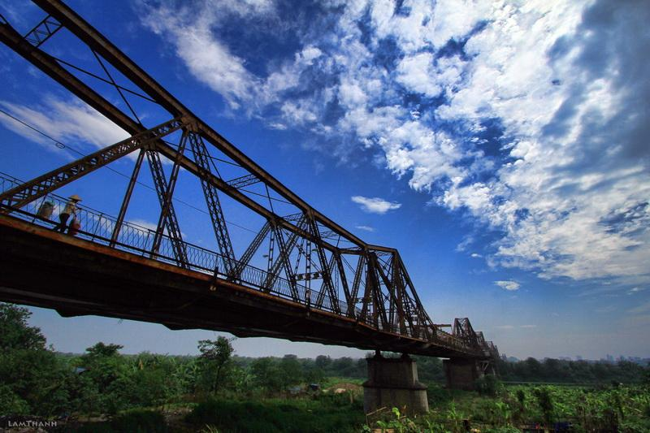

Cầu Long Biên ngày nay
Ngày nay, cầu Long Biên thu hút rất nhiều du khách cả trong nước và quốc tế đến tham quan, chiêm ngưỡng cũng như tìm hiểu về những câu chuyện lịch sử xưa. Khi đến đây, du khách sẽ có cơ hội chiêm ngưỡng khung cảnh sông Hồng thơ mộng, ngắm nhìn sà lan nổi bên dưới hay dạo bộ, đạp xe thư giãn trên cầu.
Đặc biệt, bình minh và hoàng hôn là hai thời điểm lý tưởng để ngắm nhìn khung cảnh thiên nhiên tuyệt đẹp từ trên cầu, xa xa sẽ thấy cầu Chương Dương cùng với toàn cảnh Thủ đô Hà Nội. Bên cạnh đó, du khách còn được chứng kiến tận mắt những phần khung thép gỉ và nhiều chỗ bị quân đội Mỹ ném bom trên cầu trong cuộc kháng chiến cứu nước.
Ngoài ra, cạnh cầu Long Biên còn có bãi đá sông Hồng với khung cảnh rộng lớn, xanh ngắt là địa điểm quen thuộc được giới trẻ Hà Thành và khách du lịch đến chụp ảnh, tận hưởng không khí trong lành. Vào buổi chiều, du khách có thể ghé qua khu chợ trời ở gần cầu để mua rau xanh, hoa quả tươi ngon và đồ ăn nhanh.
Đêm đến, khi đi dọc cầu Long Biên, du khách sẽ bắt gặp người dân đang đi dạo, tập thể dục; những cặp đôi đang hẹn hò trên cầu hay ở thành cầu còn sót lại những ổ khóa, những dòng chữ trắng xóa chứng minh tình yêu đôi lứa…
Đồng thời, du khách còn cảm nhận từng cơn gió mát lạnh từ sông Hồng thổi vào xua tan đi những ưu phiền trong cuộc sống. Nếu đến Hà Nội vào mùa đông thì cầu Long Biên còn là nơi lý tưởng để nhâm nhi món ngô, khoai nướng nóng hổi và thơm lừng.
Xem tiếp ---->